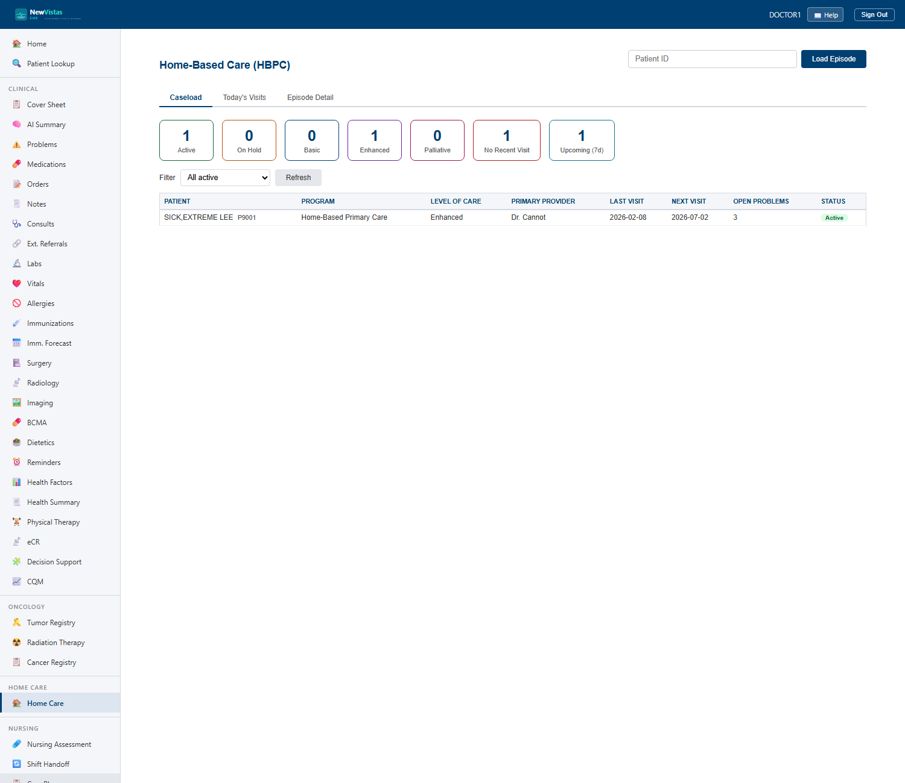
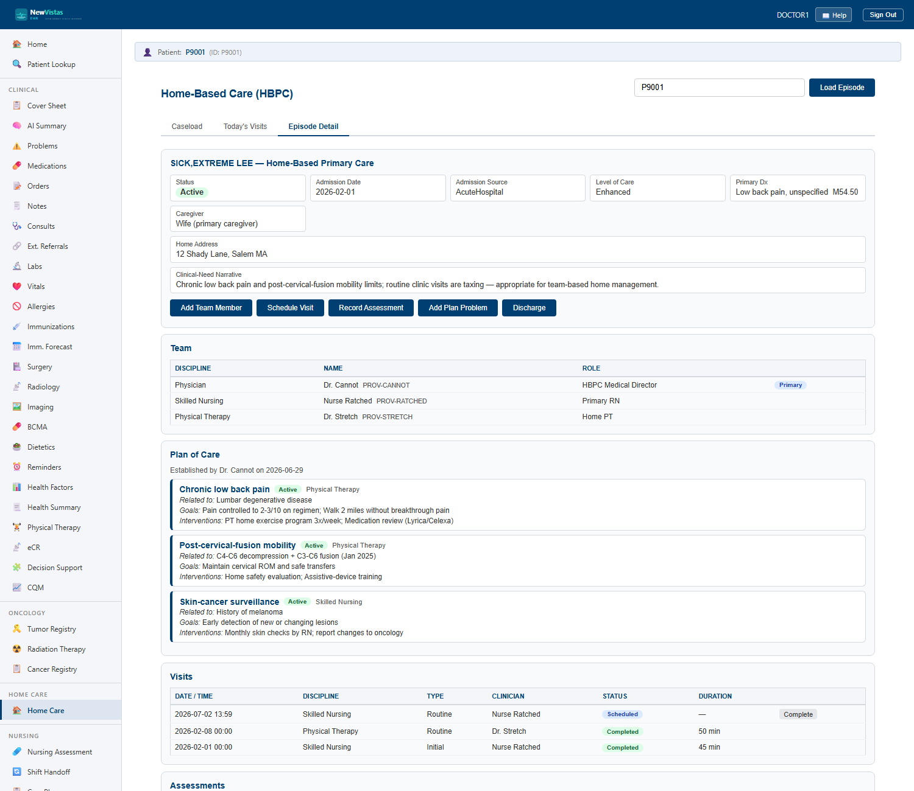
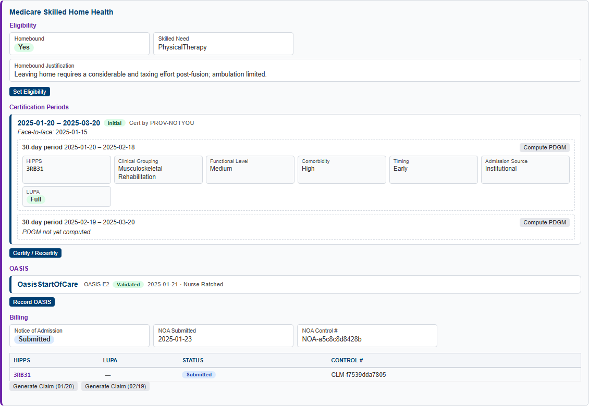

Home-Based Care — HBPC & Home Health
The Home-Based Care screen runs care delivered in the patient's home — from longitudinal, team-based Home-Based Primary Care (HBPC) through episodic Medicare skilled home health. Manage the facility caseload, drive the in-home team's daily visit schedule, and open a patient's episode to maintain the team, plan of care, home visits, assessments, and (for Medicare) certification, OASIS, PDGM grouping, EVV, and billing.
HOME_BASED_CARE), with the Medicare skilled home-health layer
gated by HOME_HEALTH_MEDICARE. If a section appears dimmed on
your site, that feature is turned off for that deployment.
Open Home-Based Care
- In the sidebar, under Home Care, click Home-Based Care (or go to
/home-care). - The page opens on the Caseload tab — the facility roster and workload tiles.
- Switch tabs with Caseload, Today's Visits, and Episode Detail.

Caseload
The Caseload tab is the program manager's view: the facility-wide roster of active episodes with workload roll-ups. The tiles across the top summarize the whole caseload at a glance.
| Tile | What it counts |
|---|---|
| Active | Episodes currently being delivered. |
| On Hold | Episodes temporarily paused. |
| Basic | Episodes at the Basic level of care. |
| Enhanced | Episodes at the Enhanced level of care. |
| Palliative | Episodes at the Palliative level of care. |
| No Recent Visit | Episodes with no completed visit in 30 days — the outreach worklist. |
| Upcoming (7d) | Visits scheduled in the next seven days. |
- Use the Filter dropdown to narrow the roster: all active, no recent visit (30d), or by level of care (Basic / Enhanced / Palliative).
- Click Refresh to re-pull the census.
- Click any row to open that patient's episode in the Episode Detail tab.
Today's Visits
The Today's Visits tab is the cross-patient daily visit schedule — the main view for the in-home mobile clients (Android / iPad). It lists every home visit scheduled across patients in the coming days, with the date/time, patient, discipline, visit type, clinician, and status.
- Open the Today's Visits tab to see the rolling visit schedule.
- Click a visit to jump to that patient's episode and document the encounter.
Episode Detail
Pick a patient — click a caseload row, click a visit, or type a Patient ID and click Load Episode — to open Episode Detail. When a patient has more than one episode, an episode selector appears so you can switch between them (for example a current HBPC episode and an older discharged Medicare one).

HBPC — Home-Based Primary Care
HBPC is longitudinal, team-based primary care delivered in the home for patients for whom routine clinic visits are taxing. It is not the episodic Medicare model — it continues for as long as the patient needs it.
Admit to HBPC
- On a patient with no active episode, click Admit to HBPC.
- Choose the program and admission source, the admission date, and the level of care (Basic / Enhanced / Palliative).
- Record the referring provider, the primary diagnosis (ICD-10), a clinical-need narrative, the primary caregiver, and the home address.
- Click Admit. The episode opens and joins the caseload.
The interdisciplinary Team
HBPC is delivered by an interdisciplinary team. Add each member with their discipline and role; mark one as the primary contact.
| Discipline | Role on the team |
|---|---|
| Physician / NP | Medical direction and primary-care oversight. |
| Skilled Nursing | Skilled assessments, medication review, wound/skin care. |
| PT / OT / SLP | Physical, occupational, and speech therapy in the home. |
| Home Health Aide | Personal care and supportive ADL assistance. |
| Medical Social Work (MSW) | Psychosocial support and resource coordination. |
| Dietitian | Nutrition assessment and counseling. |
| Pharmacy | Medication reconciliation and pharmacotherapy review. |
The Plan of Care
The plan of care is problem-oriented. Create the plan, then add each problem with its goals, interventions, and the responsible discipline. Record reviews to keep the plan current; resolve a problem when its goals are met.
- Click Create Plan of Care and record who establishes it.
- Click Add Plan Problem. Enter the problem, what it is related to, one or more goals, the interventions, and the responsible discipline.
- Review the plan periodically; resolve a problem once its goals are met.
Home visits
- Click Schedule Visit. Pick the discipline, visit type, date/time, clinician, and reason.
- After the visit, click Complete on its row. Record the duration, vital signs, interventions, a summary, an optional note ID, and the next visit date.
- Scheduled visits also surface on the Today's Visits tab for the in-home team.
The comprehensive assessment
Record an HBPC comprehensive assessment to capture the whole-person home picture. It covers functional status / ADLs, instrumental ADLs, home safety, caregiver support, cognition / mental status, nutrition, medication reconciliation, and fall risk, plus an overall summary.
Medicare skilled home health
On a Medicare skilled episode, a dedicated Medicare panel layers the regulatory workflow onto the same episode and visits: eligibility → certification → OASIS → PDGM grouping → EVV → billing.

Eligibility
Set the two Medicare gates: the patient must be homebound (with a justification) and have a skilled need (e.g. skilled nursing or physical therapy).
Certification
Open a 60-day certification period; each period contains two 30-day payment periods. Record the certifying provider and the face-to-face encounter date. Recertify to open subsequent periods.
OASIS
Record an OASIS-E2 assessment at the appropriate time point — Start of Care, Resumption, Recertification, Transfer, or Discharge. On save, the assessment is scrubbed (validated); a clean scrub marks it validated, while scrub issues are listed for correction.
PDGM grouping
Compute the PDGM case-mix grouping for a 30-day payment period. The grouper assembles a HIPPS code from five factors and flags a LUPA (Low Utilization Payment Adjustment) when the visit count is below threshold.
| PDGM factor | What it reflects |
|---|---|
| Admission source | Community vs. institutional (e.g. acute hospital). |
| Timing | Early (first period) vs. late. |
| Clinical grouping | The primary-diagnosis clinical category. |
| Functional level | Low / Medium / High, derived from OASIS items. |
| Comorbidity adjustment | None / Low / High, from secondary diagnoses. |
| LUPA flag | Marks a low-utilization period billed per-visit rather than as a full period. |
EVV
Electronic Visit Verification captures a visit check-in and check-out with the location and capture method (e.g. GPS). The in-home mobile client uses these to verify the visit actually occurred at the home.
Billing
- Submit the Notice of Admission (NOA) — due within 5 days of admission; a late submission is flagged.
- Generate a claim for a payment period from its PDGM grouping, then submit it. Each 30-day payment period bills its own claim.
Who can read and edit
Home-care data is readable by any clinician — the PCP and
specialists need to see the home-care picture for care coordination, so this is
not a privacy silo. Editing — admitting, managing the team and
plan, scheduling and documenting visits, and all Medicare operations —
requires the HBHC MANAGER security key, held by the
home-care team. In the demo, the Provider and Nurse
roles hold it.
- To edit, sign in as a provider who holds the key — for the demo, user
DOCTOR1(passwordsmythVista1). - Clinicians without the key see the same data read-only; the edit actions are hidden.